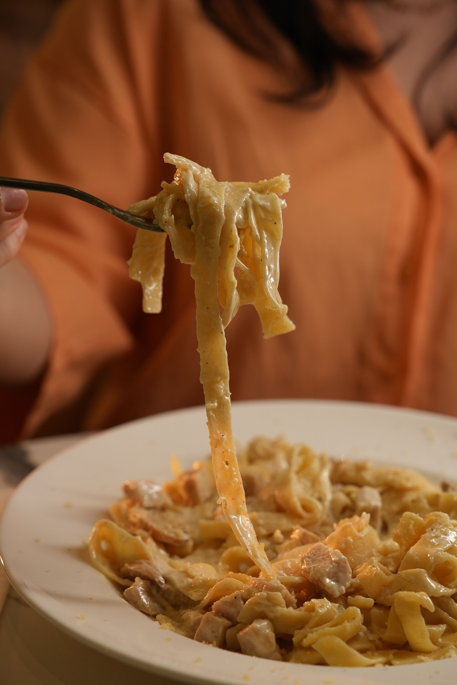

Fettuccine Alfredo
Home

Fettucine Alfredo was invented in Rome, Italy, in 1907 (or 1908) by a man named Alfredo Di Lelio.
The recipe was initially known as fettuccine al triplo burro which means, fettuccine with triple butter.
Today the dish is known to be fettuccine noodles with a thick, creamy cheese sauce (alfredo). It is a well known dish.
Ingredients
- Fettuccine pasta 8 to 16oz
- Unsalted butter 1/2 cup/1 stick
- Parmigiano-Reggiano cheese (Freshly grated) 1 cup
- Starchy pasta water (reserved from the boiling noodles)
- Heavy cream 1 to 1.5 cups
- Garlic (minced or powder)
- Salt and black pepper
- Fresh parsley (for garnish)
Instructions
- Boil the pasta by bringing a large pot of water to a rolling boil and salt it generously. Cook the fettuccine until it just shy of al dente.
- Save the starchy pasta water (1 cup) when draining.
- Melt the butter into a large skillet or pan over low heat and once it is melted turn the heat off.
- Put the drained pasta into the pan with the melted butter and throw some of your pasta water in with it and toss them to coat the noodles.
- Add the cheese and stir it all up (works well with tongs) until it somewhat melted from the heat of the noodles. Now add some pasta water to melt the cheese a bit more and then you have traditional Fettuccine Alfredo.